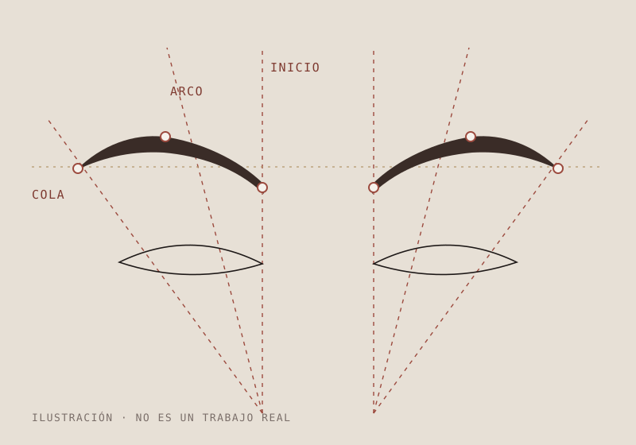
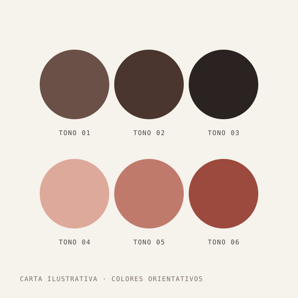
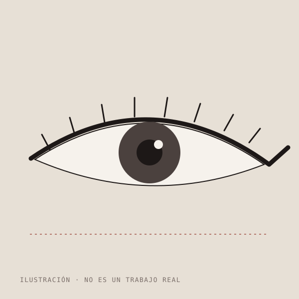
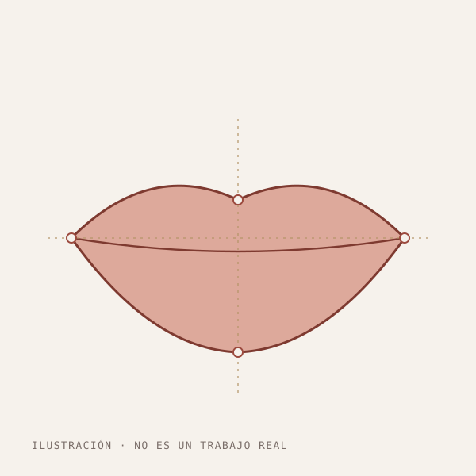

A
Cejas
Para dar forma, densidad o simetría a unas cejas despobladas, desiguales o muy claras. Se diseña el arco según la estructura de tu rostro y se elige el tono que encaja con tu pelo y tu piel.
Consultar cejasEstudio de micropigmentación facial · Villanueva del Ariscal
Cejas, mirada y labios trabajados con micropigmentación y un diseño pensado para tu rostro. Antes de pigmentar, se mide, se dibuja y se decide contigo.
01 — Tratamientos
La micropigmentación deposita pigmento de forma superficial para definir, rellenar o dar color. Cada diseño se adapta a tus rasgos, tu tono de piel y lo que quieres conseguir.
A
Para dar forma, densidad o simetría a unas cejas despobladas, desiguales o muy claras. Se diseña el arco según la estructura de tu rostro y se elige el tono que encaja con tu pelo y tu piel.
Consultar cejasB
Una línea que intensifica la mirada sin necesidad de maquillarte cada mañana. Desde un trazo muy fino pegado a las pestañas hasta una línea más marcada, siempre decidida contigo.
Consultar ojosC
Para redefinir el contorno, corregir pequeñas asimetrías o recuperar color en labios que lo han perdido. El tono se elige para que se vea natural con o sin pintalabios.
Consultar labios02 — Resultados
Desliza para ver cómo un mapeo de proporciones se convierte en un diseño de ceja. Es una ilustración del método: los trabajos reales de Margot irán en la galería, siempre con el permiso de cada clienta.
Ilustración del proceso · no es un resultado real


Espacio para un resultado de cejas de Margot


Aquí irán los trabajos reales de Margot (cejas, ojos y labios), con el permiso de cada clienta.
03 — Sobre Margot
Margot Ibáñez dedica su estudio de Villanueva del Ariscal a la micropigmentación facial. Quien te recibe es quien diseña contigo, quien pigmenta y quien te revisa después: no hay cambios de mano ni prisas.
Sus clientas destacan sobre todo dos cosas: el resultado y el trato. Muchas llegan por recomendación de una amiga, y vuelven a recomendarla.
“Ella es una persona súper especial en todos los sentidos.”Reseña en Google
04 — Cómo funciona
Hablamos de lo que quieres conseguir, revisamos tu piel y resolvemos dudas. Es el momento de contar si tienes algún trabajo previo.
Se mide tu rostro y se dibuja el diseño sobre la piel. Lo ves en el espejo y se ajusta hasta que te convence.
Se elige el tono de pigmento según tu piel, tu pelo y el efecto que buscas, más suave o más definido.
Micropigmentación con material de un solo uso y en un ambiente tranquilo, sin prisas.
Te llevas las pautas de cuidado por escrito y se valora la cicatrización para perfeccionar el resultado si hace falta.
Agujas y material desechables, abiertos delante de ti.
Sabes el diseño, el tono y el precio antes de empezar.
Se busca un resultado que te favorezca, no uno que se note.
“Margot, muchas gracias de verdad, ¡estoy encantada!”
Clienta · Google
“Me la recomendó una amiga y viendo las redes sociales me dio buena impresión.”
Clienta · Google
“Magnífica, ella es una persona súper especial en todos los sentidos.”
Clienta · Google
06 — Pedir cita
Las citas se dan por WhatsApp o por teléfono. Elige lo que te interesa y se abrirá WhatsApp con el mensaje ya escrito.
Teléfono727 74 08 24
07 — Ubicación y contacto